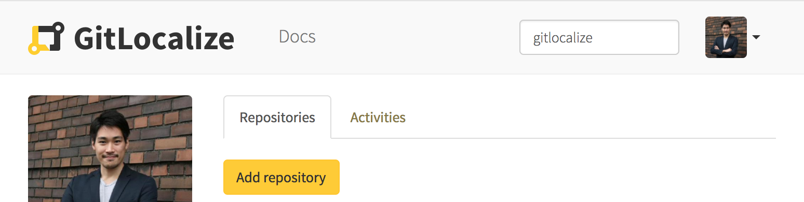
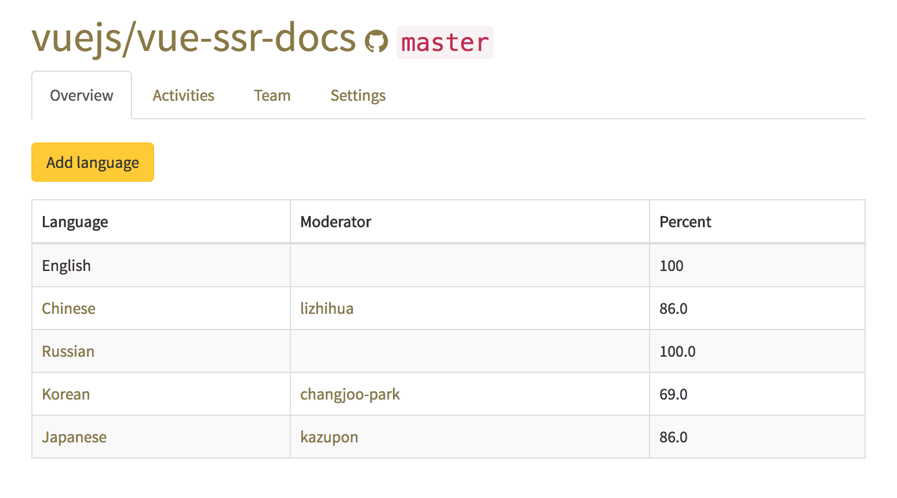
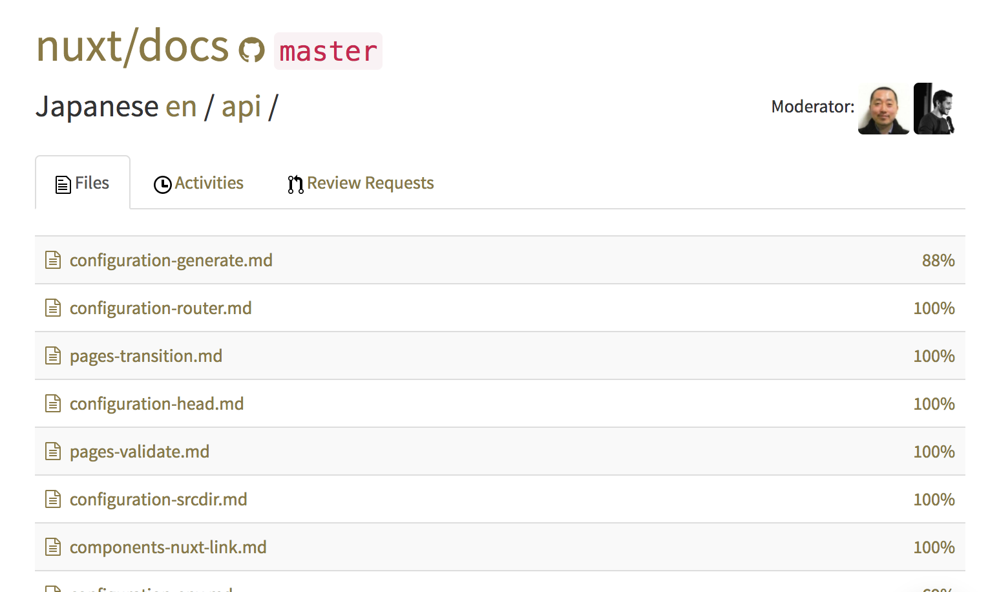
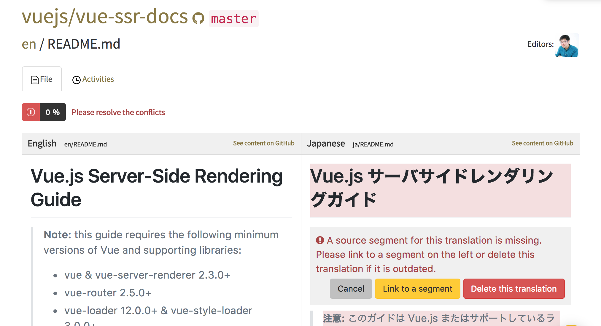
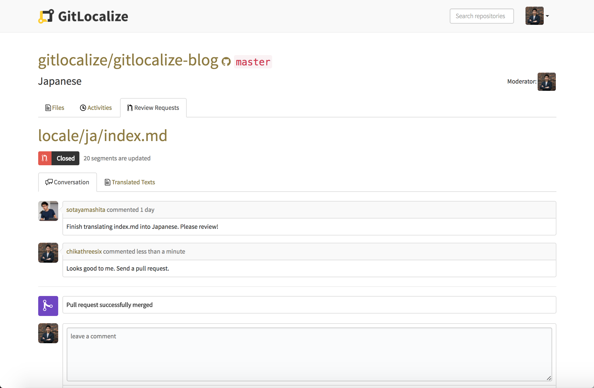

Here to describe how to contribute projects on GitLocalize.
If you don't have any project to contribute, let's search by keywords from the top search bar or check out the home page to see popular projects.

Once you navigate to a project page, you'll see a list of languages to translate. Choose a language you speak and want to contribute to.

Navigate to a file that you want to contribute and haven't been finished translating yet.
Click a segment from the right section and submit your translation.

If a translated file is far behind from the original file, GitLocalize shows it as a conflict status. In this case, click each segment and link to its parent segment.

Once you finish translating a file, Create Review Request button will be shown up at the top. Click it to create a review request to notify your team that you have finished translating the file and start a discussion.
After the moderator finds your changes are goood to go, she will send a pull request to the repo. Check out the pull request to see if you get any feedbacks there.
